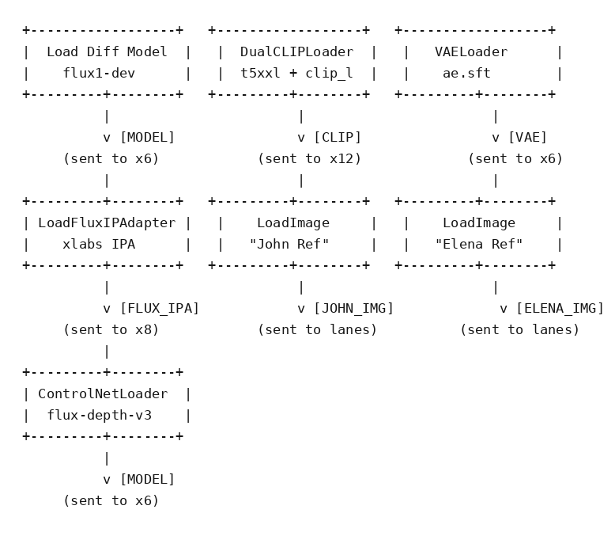
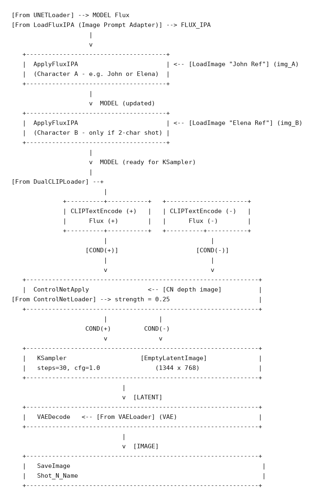

ComfyUI · Node Graph · DEEP TECHNICAL
ComfyUI Visual Stories — The Node Graph
Teaching material from a short ComfyUI course for filmmakers and graphic designers: the node graph, explained node by node through two diagrams, of the pipeline used to generate the John-and-Elena sequence introduced in Concepts. The full graph is downloadable as a JSON file. This post follows the GUI path, node by node; the Python and bash scripts that automate and scale that same kind of generation to many shots are in the companion post ComfyUI Visual Stories — The Python Scripts.
This post's job is to explain the two diagrams that summarise the graph — see the images below. The nodes they show are defined and explained one by one further down. For the ideas behind these diagrams, see Concepts.

-
01
The modules (first diagram)
Here is what each of the seven loading modules shown in the diagram above does:
- Flux-dev (Load Diffusion Model) is the main neural network, the one that generates the images (a type of Diffusion Model, explained in Concepts). Here it is loaded in its 8-bit (fp8) version: with this reduction in the bits used for its numerical representations, it can run on its own on roughly 12 GB of VRAM on an RTX 3090. Its output (MODEL) is sent to the six shots.
- DualCLIPLoader loads the CLIP network. With Flux it actually loads two networks: CLIP (clip_l) and t5xxl. They serve roughly the same purpose — text-to-image association — but the second one supports prompts of up to 512 tokens, while CLIP is limited to around 70. Its output (CLIP) is sent to the twelve text-encoding nodes.
- VAELoader loads the VAE (Variational Auto Encoder): the network that converts between the graphical pixel space and the geometric space of numerical vectors, needed to perform all the calculations. In this pipeline it is used only in its decoder function: at the end of each chain, a VAE Decode node generates the final, plain-visible image (so there is one decoder per image, six in total).
- LoadFluxIPAdapter loads the IP-Adapter (Image Prompt Adapter; here the XLabs version for Flux, paired with a CLIP ViT-L/14 image encoder). In practice, it loads the network responsible for maintaining consistency between images across different shots, injecting visual features (i.e. characteristics of the input image) into the main Flux network. Its output (FLUX_IPA) is sent to eight application nodes: one per shot, plus two more for the shots in which both characters appear. Note: at the pipeline level used in this course, this is arguably the weakest link, since it loses some consistency. In the final session of the second week I'll show how to improve it.
- ControlNetLoader loads the ControlNet network (here a depth version for Flux), which adds spatial and structural conditioning to the characters' images. It is a companion network trained to read a guide image — such as a depth map of the characters' bodies and of the scene — and to make the generated image respect that geometry, whatever poses are defined in the prompts. ControlNet is independent of the IP-Adapter. Its output is sent to six application nodes, one per shot.
- The two LoadImage nodes are simply loaders for the input images (the reference images of the two characters, John and Elena).
-
02
How the flow works
Once Flux-dev is loaded, three kinds of input are applied to the Flux model.
Shot_1_Cafe_Wide_A, which opens on John alone at the bar, or
Shot_6_Garage_Closeup_A, his dramatic close-up in the garage. In the two shots where both characters share the scene —Shot_2_Cafe_Medium_OTS_A, the over-the-shoulder shot at the bar, andShot_5_Garage_TwoShot_A, the confrontation in the garage — the chain has two ApplyFluxIPA nodes in sequence, one per character: eight applications in all, which is why the FLUX_IPA output is sent to eight nodes in the first diagram. The output of each chain enters one of the six KSampler modules, which are responsible for the Noising/Denoising process described in Concepts, controlling image generation starting from random noise (the fog discussed there). As for ControlNet, it's simpler: six lines leave the loader and enter the six nodes that apply it, one per shot — no distinction between single- and double-character shots, because the depth map concerns the scene, not the characters." data-it="L'IP-Adapter (IPA) e ControlNet modificano alcuni stati interni della rete Flux. Seguendo le linee di connessione: il modello Flux viene inviato a sei catene di nodi IPA, una per ogni shot finale. Nei quattro shot con un solo personaggio la catena ha un solo nodo ApplyFluxIPA — ad esempioShot_1_Cafe_Wide_A, che apre sul solo John al bar, oShot_6_Garage_Closeup_A, il suo primo piano drammatico nel garage. Nei due shot in cui i personaggi condividono la scena —Shot_2_Cafe_Medium_OTS_A, l'inquadratura dall'alto della spalla al bar, eShot_5_Garage_TwoShot_A, il confronto nel garage — la catena ha due nodi ApplyFluxIPA in sequenza, uno per personaggio: otto applicazioni in tutto, ed ecco perché nel primo schema l'uscita FLUX_IPA è inviata a otto nodi. L'uscita di ogni catena entra in uno dei sei moduli KSampler, responsabili del processo di Noising/Denoising descritto in Concetti. Per ControlNet, più semplice: sei linee escono dal loader ed entrano nei sei nodi che lo applicano, uno per shot — nessuna distinzione tra shot singoli e doppi, perché la mappa di profondità riguarda la scena, non i personaggi."> The first two act on the image itself: the IP-Adapter (IPA) and ControlNet, which modify certain internal states of the main Flux network. Following the wires between the nodes: the Flux model is sent to six chains of IPA nodes, one per final shot. In the four shots with a single character the chain has one ApplyFluxIPA node — for exampleShot_1_Cafe_Wide_A, which opens on John alone at the bar, orShot_6_Garage_Closeup_A, his dramatic close-up in the garage. In the two shots where both characters share the scene —Shot_2_Cafe_Medium_OTS_A, the over-the-shoulder shot at the bar, andShot_5_Garage_TwoShot_A, the confrontation in the garage — the chain has two ApplyFluxIPA nodes in sequence, one per character: eight applications in all, which is why the FLUX_IPA output is sent to eight nodes in the first diagram. The output of each chain enters one of the six KSampler modules, which are responsible for the Noising/Denoising process described in Concepts, controlling image generation starting from random noise (the fog discussed there). As for ControlNet, it's simpler: six lines leave the loader and enter the six nodes that apply it, one per shot — no distinction between single- and double-character shots, because the depth map concerns the scene, not the characters.Shot_3_Cafe_Closeup_A, for example, clip_l is just “Elena, sleek female tech informant mid 30s…”, while t5xxl spells out the shot in full: “Single face, one person. Intense cinematic macro close-up shot…”. It's this second field that really drives the composition; the first only anchors the face's identity." data-it="Il terzo input agisce sul testo: dodici nodi CLIPTextEncodeFlux (uno positivo e uno negativo per shot) attivano i prompt che descrivono le sei immagini di output. Ogni nodo ha due campi: clip_l, che contiene solo l'etichetta di identità del personaggio, e t5xxl, con la descrizione estesa dell'inquadratura (o, nel nodo negativo, gli elementi da escludere). Per
Shot_3_Cafe_Closeup_A, ad esempio, clip_l si limita a “Elena, sleek female tech informant mid 30s…”, mentre t5xxl descrive l'inquadratura per esteso: “Single face, one person. Intense cinematic macro close-up shot…”. È questo secondo campo a guidare davvero la composizione; il primo serve solo ad ancorare l'identità del volto."> The third input acts on the text component: twelve CLIPTextEncodeFlux nodes (one positive and one negative per shot) activate the prompts describing the six output images. Each node has two fields: clip_l, which holds only the character's identity tag, and t5xxl, with the long description of the shot (or, in the negative node, the elements to exclude). ForShot_3_Cafe_Closeup_A, for example, clip_l is just “Elena, sleek female tech informant mid 30s…”, while t5xxl spells out the shot in full: “Single face, one person. Intense cinematic macro close-up shot…”. It's this second field that really drives the composition; the first only anchors the face's identity.Let's go over the inputs again:
- Image identity: the IP-Adapter injects the visual features of the character reference images into the Flux model, once per character present in the shot.
- Spatial structure: ControlNet applies the guide depth map to the conditioning that reaches the sampler.
- Text: positive and negative conditioning, encoded by the CLIPTextEncodeFlux nodes.
- VAE: in this pipeline there is no VAE Encode node, because generation starts from an empty latent canvas (EmptyLatentImage); the VAE is used only at the end, to decode.
Shot_5_Garage_TwoShot_A.png." data-it="A questo punto arriviamo ai passaggi finali: ControlNet applica la guida spaziale, KSampler esegue il Noising/Denoising. Infine il VAE decoder riporta l'immagine in chiaro, salvata con un nome che riprende lo shot — ad esempio
Shot_5_Garage_TwoShot_A.png."> At this point we reach the final steps: ControlNet applies the spatial guidance, KSampler performs the Noising/Denoising. Finally the VAE decoder brings the image back into plain, visible form, saved under a name that echoes the shot — for exampleShot_5_Garage_TwoShot_A.png.

-
03
The main modules (second diagram)
Here is what each of the main modules shown in the flow diagram above does — the modules not already covered among the loaders:
- ApplyFluxIPA applies the IP-Adapter to the current MODEL state, injecting one character's visual identity (from their reference image) into the network. It's applied once per character: when both share a scene, two nodes run in sequence, and the second partially overrides the first — a known limitation, mitigated by weighting the focal character higher (the weights in the pipeline range from 0.60 to 0.68).
- CLIPTextEncodeFlux (+) is the positive conditioning branch: it encodes the scene prompt — the character-identity tags in the clip_l field plus the detailed shot description in the t5xxl field — into the numeric space that will guide image generation. It also carries Flux's guidance value (3.5 here).
- CLIPTextEncodeFlux (−) is the negative conditioning branch: it encodes what to exclude (blurry results, deformed anatomy, extra characters, and so on). At Flux's typical cfg=1.0 the sampler effectively ignores it, but it's wired correctly for whenever the cfg value is raised.
- ControlNetApplyAdvanced applies the depth map rendered from the 3D camera/mesh setup, at a given strength (here 0.25, over the whole sampling process), providing spatial and pose guidance to the model.
- KSampler is the actual sampling engine: it performs the iterative Noising/Denoising cycle described in Concepts, converting random noise into the final latent image, guided by the positive/negative conditioning and by ControlNet. Here: 30 steps, euler sampler with the simple scheduler, cfg 1.0.
- EmptyLatentImage allocates the empty latent canvas at the target resolution (1344×768) that KSampler will progressively fill.
- VAEDecode converts the final latent tensor into a pixel-space image, using the VAE loaded once at the top of the pipeline.
- Shot_N_Name)."
data-it="SaveImage scrive l'immagine risultante su disco con un nome file specifico per ogni shot (ad es.
Shot_N_Name)."> SaveImage writes the resulting image to disk under a per-shot filename (e.g.Shot_N_Name).
-
04
Settings at a glance and download
The main settings of the downloadable pipeline, at a glance:
- Models: Flux-dev (fp8), text encoders clip_l + t5xxl (fp8), VAE ae.sft.
- IP-Adapter: XLabs Flux version with a CLIP ViT-L/14 image encoder; weight 0.60–0.68 per application; 8 applications (6 shots, plus 2 for the two-character shots).
- ControlNet: flux-depth-controlnet-v3; strength 0.25, active from 0 to 100% of the steps; 6 applications.
- Text: 12 CLIPTextEncodeFlux nodes (positive + negative for each shot); Flux guidance 3.5.
- Sampling: KSampler with 30 steps, euler / simple, cfg 1.0, full denoise; canvas 1344×768.
- Output: 6 shots, each saved as its own image.
Before running the pipeline, make sure all required custom node packs and model files are installed. The instructions page linked below lists every package, every model weight, and the files you need to provide yourself.
↓ Download the pipeline (JSON) → Instructions for customized modules